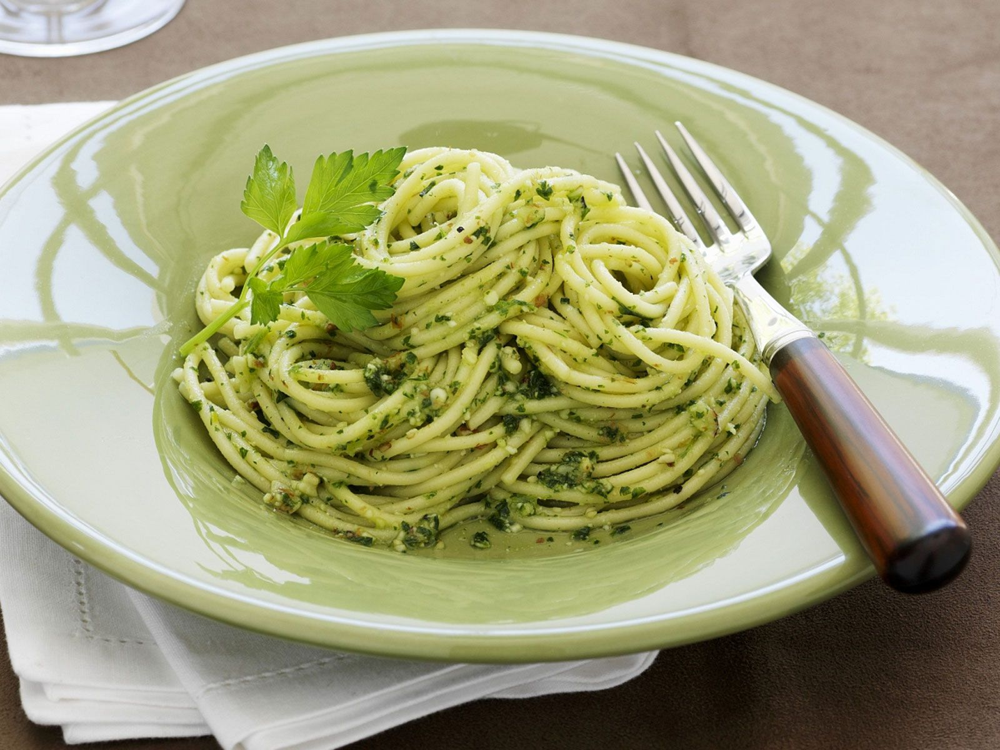

Peto

You can eat pasta with pesto or much more!
The easiest parsley pesto made with simple ingredients and ready in only 2 minutes! You can use this pesto in so many ways from pasta, with fish or chicken, in salads, sandwiches or as a dip. It’s the easiest way to add a ton of flavor to your food!
You probably already know that pesto is one of my favourite things ever. The most common known basil pesto is incredibly delicious (when homemade, I hate the jarred stuff) BUT you also make pesto with parsley!
Yup, you can pretty much make pesto with any herb…fresh coriander (cilantro) is also delicious with many Mexican dishes but the basil and parsley varieties are brilliant with Mediterranean and Italian food.
Ingredients
- parsley
- lemon juice
- garlic
- parmesan
- pine nuts
- olive oil
- salt and pepper
Preparation
There are two ways to make pesto:
-
The traditional way to make pesto is using a mortar and pestle, add all the ingredient to the mortar and grind and bash it into a paste. Some Italians in the north of Italy will even argue that if it’s not made in a mortar and pestle then it ain’t pesto (talking about basil pesto).
-
The other method and the one I use regularly for quickness is using a bowl and immersion (handheld) blender. I just add all the ingredients to a bowl and blend until smooth and thick. Done!
Flat Leaf Parsley Vs Curly Parsley
I’m not really a fan of curly parsley I find it very coarse and I don’t think the flavour is as nice as flat-leaf parsley either. Of course, you can use either but I recommend using only flat-leaf parsley to make this pesto as it’ll result in a smoother consistency.
Top Tips For Making Parsley Pesto
-
Yes, you can freeze pesto. Transfer it into an ice cube tray or store it in small plastic containers and freeze for up to 6 months.
-
Don’t toast the pine nuts, I’ve seen many recipes recommend this but you get a nice creamy taste from un-toasted pine nuts.
-
You can use parmigiano reggiano cheese or hard pecorino cheese to make this pesto.
-
Don’t skip the garlic unless you have to it adds a ton of flavour.
Home